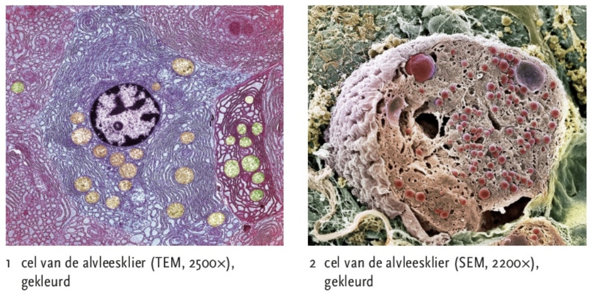
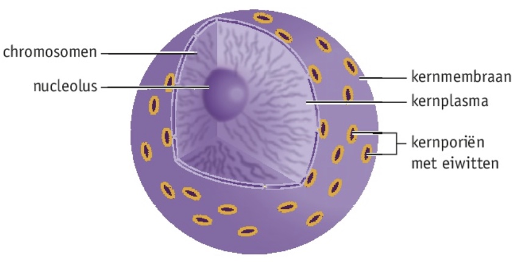
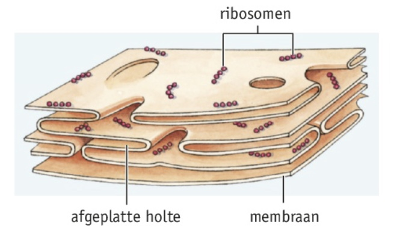
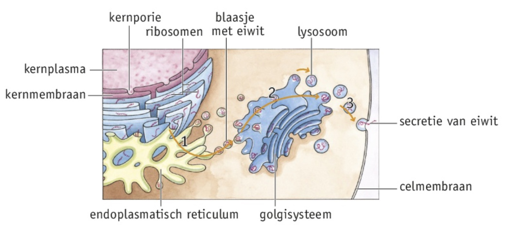
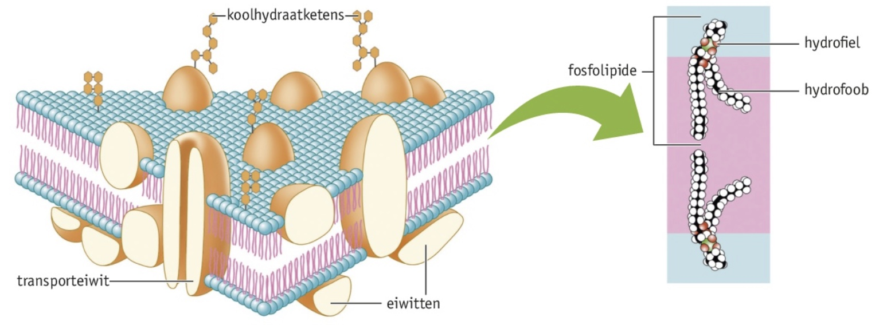

Je kunt een cel beschrijven als een zelfstandig functionerende biologische eenheid.
Je kunt de bouw en functie van het cytoskelet van cellen beschrijven.





Celkern
De kern is omgeven door het kernmembraan en bevat kernplasma met daarin chromosomen. Chromosomen zijn lange moleculen DNA die rond eiwitten zijn gewikkeld. DNA bevat de informatie over de erfelijke eigenschappen van een organisme. Nucleolus bevindt zich in het kernplasma, dit is de plaats waar delen van ribosomen worden gemaakt. Deze delen verlaten de kern via de kernporiën in het kernmembraan en vormen ribosomen in het cytoplasma.
Endoplasmatisch reticulum en golgisysteem
Het endoplasmatisch reticulum is het netwerk van dubbele membranen dat is aangesloten op het kernmembraan. Er zijn twee typen endoplasmatisch reticulum:
ticulum (RER), hieronder bevinden zich ribosomen (kleine bolvormige organellen die eiwitten produceren)
>rb<<
eticulum (GER) heeft geen ribosomen
/li>>il<
De eiwitmoleculen in de blaasjes die het RER afsnoert, hebben nog niet de uiteindelijke vorm. Dat gebeurd in het golgisysteem, wat bestaat uit opeengestapelde platte membranen in het cytoplasma van de cel.
Exocytose is het afsnoeren van blaasjes door het celmembraan om stoffen naar buiten de cel transporteren. Het afgeven van stoffen door cellen noem je secretie, dit vindt veel plaats in cellen van klieren. Andere blaasjes die van het golgisysteem afsnoeren, blijven in de cel, zoals lysosomen. (ZIE AFBEELDING 27)
Mitochrondiën en chloroplasten
Mitochrondiën zijn bolvormige organellen, met dubbele membranen waarvan het binnenmembraan sterk geplooid is. In het cytoplasma van mitochrondiën worden vetten, eiwitten en koolhydraten afgebroken. De energie die hierbij vrijkomt wordt tijdelijk opgeslagen in de moleculen van de stof ATP. Deze moleculen kunnen vanuit het mitochrondrium naar het cytoplasma voor als er energie nodig is. Chloroplasten doen aan fotosynthese en bezitten ook een dubbel membraan. De membranen van deze twee hebben beide een groot oppervlak voor een betere werking van de enzymen.
Cytoskelet
Een cytoskelet is een netwerk van eiwitvezels binnen de cel en zorgt ervoor dat deze zijn vorm behoudt en dat de organellen op hun plek blijven. Een cytoskelet verplaatst bijvoorbeeld motoreiwitten met voetjes, net als een amoebe. Het cytoskelet bevat twee soorten vezels:
microtubuli zijn buisjes gevormd door eiwitten
microfilamenten zijn gedraaide dubbele draden van eiwitten
Ze worden beide gebouwd door moleculen toe te voegen en los te laten.
Membranen
Celmembranen bestaan uit een dubbele laag van fosfolipiden, dit zijn vetachtige stoffen, de ene kant is hydrofiel en de ander hydrofoob. De dubbele laag ontstaat doordat de koppen en staarten van een fosfolipidemolecuul elkaar aantrekken. Een membraan is erg flexibel doordat één van de vetzuurmoleculen een knik heeft, dit is een onverzadigd vetmolecuul. Het verzadigde vetmolecuul is recht. Koolhydraatketens spelen een rol bij de herkenning van de cel door eiwitten. Het celmembraan bevat ook cholesterol, dat een rol speelt bij de stevigheid van de membranen.